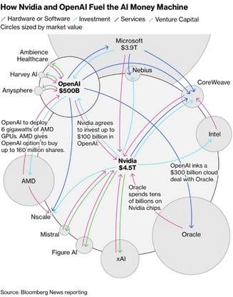
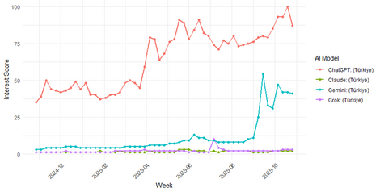
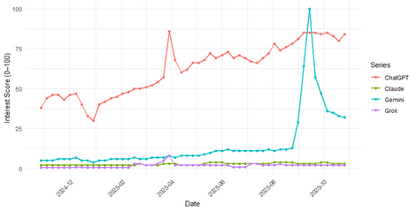
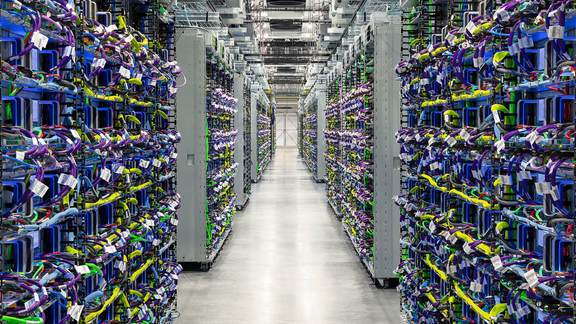
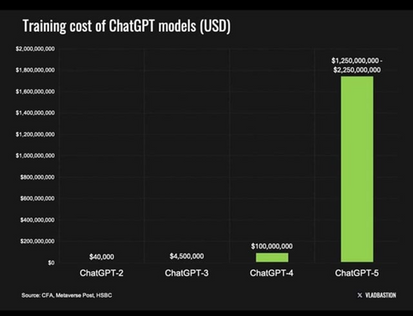
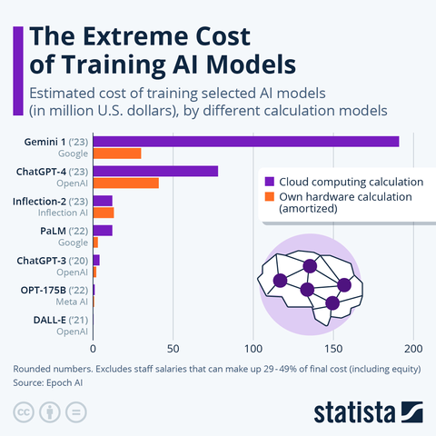
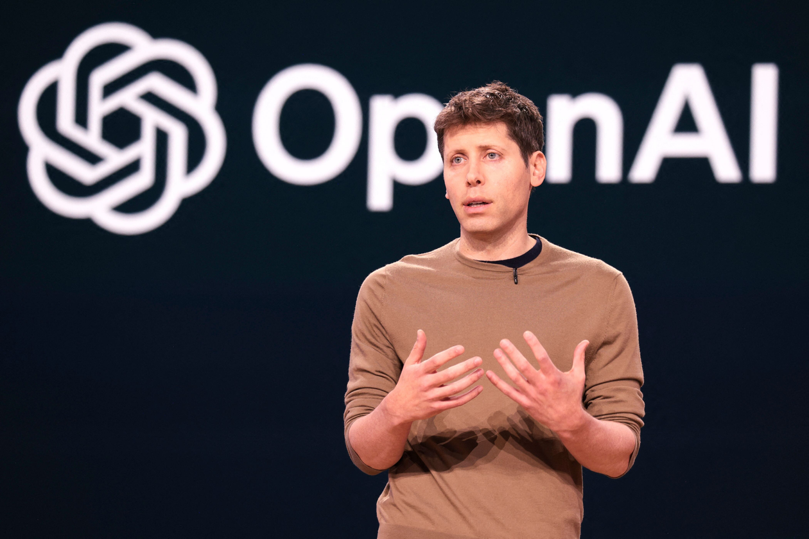
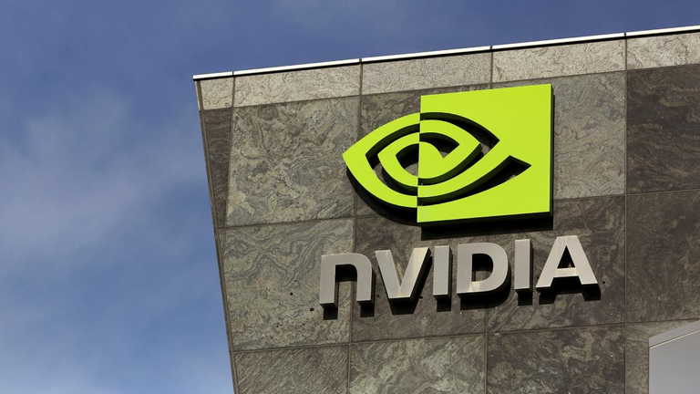

Modern artificial intelligence is defined by a complex and deeply connected ecosystem of capital, hardware, and services. This network, often referred to as the "AI Money Machine," is not a traditional supply chain but a multi-directional relationship where the roles of investor, supplier, and customer blur together. At the center sits NVIDIA, with a market valuation of 4.5 trillion USD, serving as the primary hardware provider and core of the AI ecosystem. Its Graphics Processing Units (GPUs) represent the essential foundation of the AI value chain, determining the technological roadmaps of companies like OpenAI and shaping the entire sector's growth.

OpenAI, valued at 500 billion USD, stands as the ecosystem's central demand driver. Its commitment to building ever more powerful AI models—from large language models to text-to-image and text-to-video systems—creates increased demand for computational resources. This demand has materialized in some of the largest financial deals ever recorded: a 300 billion USD, five-year cloud agreement with Oracle for 4.5 gigawatts of capacity starting in 2027, and a strategic partnership with AMD to deploy 6 gigawatts of AMD GPUs. Microsoft, partnering with and investing in OpenAI, hosts its models on Azure, which also runs on extensive NVIDIA GPUs. Meanwhile, NVIDIA agrees to invest up to 100 billion USD in OpenAI while selling GPUs across the entire ecosystem. Venture capital and strategic money flow into startups like Mistral, Figure, Harvey, and others, which then purchase compute from the same clouds, sending cash back through the system in a circular pattern.
This network is not a traditional supply chain but a multi-directional relationship where the roles of investor, supplier, and customer are blurred.
Platforms, Complements, and Scale Effects
The relationships in generative AI often have a platform-like structure, particularly following ChatGPT's breakthrough. OpenAI's API platform connects developers who build and fine-tune models with end-users consuming AI services. Similarly, cloud providers like Microsoft Azure serve as platforms linking AI model providers with enterprise clients and governments seeking AI capabilities. In classic two-sided market theory, a platform's value comes from cross-side network effects: more AI developers attract more end-users, and vice versa. This dynamic explains ChatGPT's ability to outperform other AI models.
Microsoft's Azure benefits directly from hosting exclusive OpenAI models, attracting enterprise customers who want GPT capabilities while giving OpenAI access to a larger user base through Microsoft's enterprise reach and more valuable usage data. The pricing structure often exhibits cross-subsidy: Microsoft subsidized OpenAI with below-cost cloud services to grow usage on Azure and capture enterprise revenues, much like gaming consoles sold at a loss to build a user base for games. Similarly, end-users initially accessed ChatGPT for free or at low cost, subsidized by venture capital and cloud credits, to build network effects and generate training data from user interactions.


Platform competition is emerging across the AI sector. AWS, Azure, and Google Cloud each aim to be the primary ecosystem for AI services, competing by aligning with model providers: Anthropic with Amazon, OpenAI with Microsoft, Google with its internal models and open-source releases. Each platform seeks to attract both producers (AI model developers) and consumers (businesses and developers) to its environment.
A critical driver of AI investment is the presence of scaling laws—empirical relationships showing that model performance improves as a power law of model size and training compute. Larger models trained on more data consistently deliver better accuracy and capabilities across many tasks, though with diminishing returns. This dynamic creates strong pressure to scale up, driving a race where each generation of model (GPT-3, GPT-4, GPT-5) is computationally more intensive than its predecessor. Only those with access to substantial compute resources can participate in this race, creating significant first-mover advantages.
Cost-side economies of scale reinforce this trend. Cloud data centers incur high fixed costs—electricity, water, cooling—but operate at low marginal costs. This economics enables a marginal cost of 1.25 USD per 1 million tokens for GPT-5 as of October 2025. OpenAI's CEO observed that with their user base growing to nearly a billion, the company can justify massive cloud spending. AI firms are also finding ways to optimize performance through algorithmic improvements like model compression and more efficient architectures, or by reducing GPU usage as DeepSeek demonstrated, allowing the cost-performance frontier to advance without proportional cost increases.
Capital and Long-Term Contracts
Developing initial models and the cloud clusters to run them requires billions of dollars in capital, far beyond typical startup funding. Funding sources include large tech companies' balance sheets (Microsoft's investments in OpenAI, Google's AI capex), venture capital and private equity (OpenAI and Anthropic raised approximately 10 billion USD each), and debt financing. OpenAI's revenue structure initially relied on Microsoft's equity and advance purchase of Azure credits. By 2025, OpenAI also turned to debt markets, with JPMorgan leading a 2.3 billion USD loan to OpenAI and partners for building the Texas data center for the Stargate Project. Smaller players like CoreWeave raised money in multiple rounds (200 million USD in 2023) and took on debt to purchase GPUs, using the hardware as collateral.
A key trend in recent AI deals is the use of long-term capacity purchase agreements. OpenAI's 250 billion USD commitment to Microsoft's Azure cloud guarantees Microsoft large, steady income. Even if OpenAI finds cheaper alternatives later, the contract binds them to continued payment or forfeit of that money. The 300 billion USD, five-year deal between OpenAI and Oracle similarly obligates OpenAI to spend substantial amounts annually on Oracle Cloud. These commitments enable providers like Oracle to invest confidently in new GPU farms with guaranteed customers.

Hyperscale cloud providers count on high utilization rates, spreading fixed data center costs across millions of users. This creates a potential "money machine" dynamic: as a model is built, serving additional customers—especially via an API—is cheap, so at scale, revenue can exceed operating costs if usage scales appropriately.
Some deals also include options granting rights to future profits. OpenAI's right to purchase up to 10 percent of AMD's stock functions like a call option: if AMD's AI chip business grows, OpenAI can profit. Microsoft has employed similar structures, obtaining partial rights to OpenAI's profits up to certain limits. These financial instruments help manage uncertainty and distribute both risks and potential rewards.
Building AI capacity is risky and costly. When billions are spent on data centers or training, that investment cannot easily be recovered. Consequently, companies invest in diversification and flexibility. OpenAI uses Azure, Oracle, and CoreWeave, so if one provider becomes expensive or unreliable, alternatives exist. Cloud providers take different approaches: Microsoft works with OpenAI but also invests in other startups like Anthropic, Amazon supports Anthropic separately, and Google supports multiple labs including DeepMind. The Stargate project illustrates this optionality—starting at 100 billion USD with potential expansion to 500 billion USD only if conditions remain favorable. Each step functions like an "option" to continue investing if circumstances justify it.
Cloud Computing and Inference Costs
Training a large model is a one-time expense involving vast computing operations using specialized tools like NVIDIA's H100 GPUs. Training OpenAI's GPT-3 (175 billion parameters) required approximately 3.14×10²³ floating-point operations. On standard GPU hardware, this translates to thousands of GPU hours, costing roughly 500,000 USD to 4.6 million USD for a single training run, depending on hardware efficiency assumptions. GPT-4, larger and trained on more data, cost significantly more. Recent new GPT models will cost more as data becomes scarcer and training requires more computational power.

These training costs are largely sunk. Once a model is trained, that money has been spent on electricity and hardware. However, inference—the process of generating output from inputs—introduces ongoing costs that scale with the model's size and query complexity. For GPT-3 models, generating 1,000 tokens costs approximately 0.0003 USD in raw computation. OpenAI's API pricing for GPT-3 was roughly 0.002 USD per 1,000 tokens, implying healthy margins over raw costs. But when multiplied by millions of users engaging in complex, multi-turn interactions, inference costs escalate rapidly. Total inference costs can far exceed training costs over time, functioning as a continuous operating expense that occurs every time the service is provided.
The scale matters enormously. If a model is extremely popular, aggregate GPU time for inference can exceed training by orders of magnitude over the model's life—training occurs once, but inference happens continuously, 24/7. Cloud providers charge for inference typically on a token basis, creating ongoing bills for model providers. OpenAI's API runs on Azure; OpenAI pays Azure for each GPU-hour consumed to answer API calls, likely at a discounted rate under contract. If OpenAI's revenue per API call does not sufficiently exceed cloud costs, margins remain thin.

This reality has motivated efforts to optimize inference through model compression, quantization, hardware acceleration, and caching of frequent results—all reducing costs per query. There is also a trade-off with model size: smaller models are cheaper to run but less accurate and hallucinate more. Companies are exploring distilled models to handle routine queries while reserving the larger model for difficult cases, a cost-tiered service approach.

The cloud model means AI companies typically do not own their machines directly; they rent via AWS, Microsoft Azure, and Oracle. This allows scaling to thousands of GPU instances when needed and scaling down during off-peak times, providing valuable elasticity. For training, which can consume 100 percent of resources at peak and none otherwise, and for variable inference loads, this flexibility is essential. Cloud also converts fixed costs into variable costs, helping startups avoid enormous upfront capital outlays for hardware.
Pricing varies significantly. The big three clouds (AWS, Azure, Google Cloud) charge premium prices, offering brand, comprehensive services, and justifying higher costs. Specialized clouds like CoreWeave and Lambda Labs offer lower prices by optimizing purely for AI workloads and eliminating some features. Companies can vary huge costs by choosing their provider strategically.
Validating the Money Machine

Justifying the AI ecosystem's massive cash flows remains challenging. However, several metrics can validate whether the "AI Money Machine" is truly printing money. The clearest validation would be companies throughout the AI value chain reporting sustained profits directly attributable to AI services. If OpenAI or its investors like Microsoft can demonstrate that revenue from ChatGPT, Sora, and other AI services covers ongoing cloud costs plus R&D investments within a reasonable timeframe, that signals strength. If Azure's gross margin improves due to economies of scale and remains healthy even as competition intensifies, it suggests the machine is working.
High and growing margins on AI services would reflect the ideal scenario: each additional dollar of AI revenue comes with relatively low cost. Marginal costs so low that they approach the theoretical perfection of the money machine.
It is equally important to watch for signs of failure. If investments never break even, or if diminishing returns appear—where scaling models further yields little new value but costs exponentially more—the machine may stall. If GPT-6 requires billions in additional investment but delivers only marginal gains insufficient to justify cost, the money machine stops working. This would manifest as flatter user growth, with people sticking to slightly older, cheaper models like GPT-4o. Externalities and regulation pose another risk: a carbon tax significantly raising operating costs, or strict data usage regulations limiting model growth, would threaten the entire structure.
As data on AI accumulates, researchers and policymakers will be able to assess whether generative AI is truly a new engine of economic value creation or simply a costly fascination. The metrics and frameworks discussed aim to ensure that as this machine is built, its output is measured and adjusted to maximize societal benefit while preventing harm.
Selected references
- Advanced Micro Devices, Inc. (2025, October 6). AMD and OpenAI announce strategic partnership to deploy 6 gigawatts of AMD GPUs. AMD Newsroom. https://www.amd.com/en/newsroom/press-releases/
- Appenzeller, G., Bornstein, M., & Casado, M. (2023, April 27). Navigating the high cost of AI compute. Andreessen Horowitz. https://a16z.com/navigating-the-high-cost-of-ai-compute/
- Bajwa, A., & Varghese, H. M. (2025, October 1). Key stakeholders in $500 billion Stargate AI project. Reuters. https://www.reuters.com/business/media-telecom/key-stakeholders-500-billion-stargate-ai-project-2025-10-01/
- Buchholz, K. (2024, September 23). The extreme cost of training AI models. Statista. https://www.statista.com/chart/33114/estimated-cost-of-training-selected-ai-models/
- Hu, K. (2023, August 3). CoreWeave raises $2.3 billion in debt collateralized by Nvidia chips. Reuters. https://www.reuters.com/technology/coreweave-raises-23-billion-debt-collateralized-by-nvidia-chips-2023-08-03/
- Sevilla, J., Ho, A., & Besiroglu, T. (2023). Please report your compute: Seeking consistent means of measure. Communications of the ACM, 66(5), 30–32. https://doi.org/10.1145/3563035